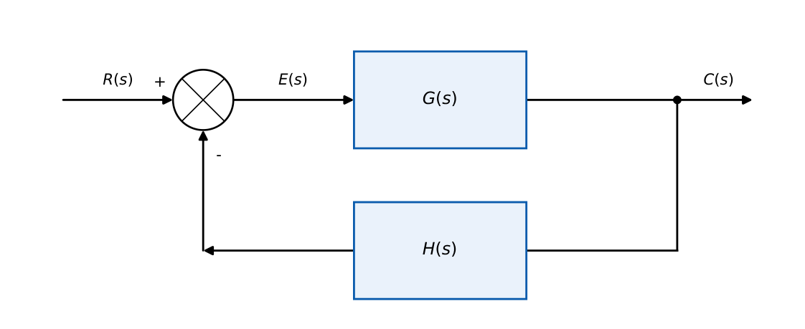
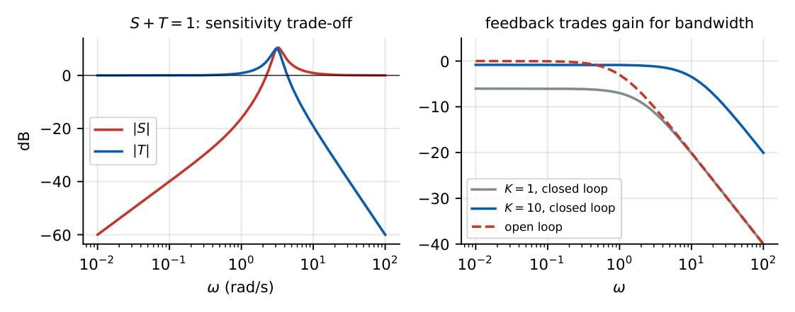

Feedback Principle
In this chapter
Closed-loop transfer function, sensitivity, effect of feedback on gain, bandwidth, disturbance and noise. Typical: find \(C/R\) or \(C/D\), compute the sensitivity of \(T\) with respect to \(G\) or \(H\).
4.1 Core concept

\(E=R\mp HC\) and \(C=GE\). Hence \(C=G(R\mp HC)\), so \[ T(s)=\frac{C}{R}=\frac{G}{1\pm GH}\quad(\text{upper sign: negative feedback}). \] Characteristic equation: \(1+G(s)H(s)=0\) (negative feedback). Open-loop TF: \(GH\). Unity feedback (\(H=1\)): \(T=\dfrac{G}{1+G}\).
Negative feedback: \(\dfrac{G}{1+GH}\); positive feedback: \(\dfrac{G}{1-GH}\); error \(\dfrac{E}{R}=\dfrac1{1+GH}\); \(\dfrac{B}{R}=\dfrac{GH}{1+GH}\).
4.2 Sensitivity
\(S_x^T=\dfrac{x}{T}\dfrac{\partial T}{\partial x}\). With \(T=\dfrac{G}{1+GH}\): \[ S_G^T=\frac{1}{1+GH}\quad(=S),\qquad S_H^T=-\frac{GH}{1+GH}\quad(=-\text{complementary sensitivity}). \]
- Sensitivity function \(S=\dfrac1{1+GH}\), complementary sensitivity \(T=\dfrac{GH}{1+GH}\), so \(S+T=1\).
- If \(|GH|\gg1\): \(S\to0\) (insensitive to plant changes) but \(S_H^T\to-1\): the feedback element must be accurate.

4.3 Effects of negative feedback
| Quantity | Effect |
|---|---|
| Gain | reduced by the factor \(1+GH\) (the “return difference”) |
| Sensitivity | reduced by \(1+GH\) |
| Bandwidth | increased by (about) \(1+GH\); gain\(\times\)bandwidth roughly constant |
| Disturbance | attenuated by \(1+GH\) |
| Stability | can degrade; may create oscillation for high gain |
| Time constant | reduced (faster) |
| Noise (sensor) | reproduced at the output (not rejected) |
\(G=\dfrac{K}{\tau s+1}\), \(H=1\): \(T=\dfrac{K}{\tau s+1+K}=\dfrac{K/(1+K)}{\frac{\tau}{1+K}s+1}\). So the DC gain drops to \(\dfrac K{1+K}\), the time constant shrinks to \(\tau/(1+K)\), and the bandwidth \(\dfrac{1+K}{\tau}\) rises: the product is unchanged.
4.4 Disturbance rejection
With a disturbance \(D\) entering between \(G_1\) and \(G_2\):
\(C=\dfrac{G_1G_2}{1+G_1G_2H}R+\dfrac{G_2}{1+G_1G_2H}D\).
Large \(G_1\) (controller gain before the disturbance entry) reduces the effect of \(D\) by a factor \(\approx G_1H\).
\(G_1=10\), \(G_2=1/(s+1)\), \(H=1\): \(\dfrac CD=\dfrac{1/(s+1)}{1+10/(s+1)}=\dfrac1{s+11}\); DC disturbance gain \(1/11\) vs \(1\) without feedback.
\(G=\dfrac{20}{s+2}\), \(H=0.5\) at \(s=0\): \(GH=5\). \(S_G^T=\dfrac1{1+5}=0.167\); \(S_H^T=-\dfrac5{6}=-0.833\). A \(6\%\) change in \(G\) alters \(T\) by \(1\%\).
Open-loop DC gain \(10\) with \(10\%\) drift \(\Rightarrow\) output changes \(10\%\). With unity feedback \(T(0)=\dfrac{10}{11}\); \(S=1/11\): output changes \(\approx0.9\%\).
Bandwidth of unity-feedback \(K/(\tau s+1)\): \((1+K)/\tau\). Return difference \(F=1+GH\) scales gain down and sensitivity down by the same factor.
Feedback reduces sensitivity to the forward-path \(G\) but does not reduce sensitivity to \(H\), and does not remove sensor noise. Also gain is reduced, not increased, by negative feedback.
Q1. For unity negative feedback with \(G=10/(s+1)\), closed-loop DC gain is (A) 10 (B) 10/11 (C) 1 (D) 0.1.
Q2. Sensitivity of \(T\) to \(G\) under negative feedback is (A) \(\dfrac1{1+GH}\) (B) \(\dfrac{GH}{1+GH}\) (C) \(1+GH\) (D) \(-1\).
Q3. Negative feedback (A) increases sensitivity (B) increases bandwidth (C) increases gain (D) eliminates noise.
Answers: Q1 (B). Q2 (A). Q3 (B).
Q4. \(G=\dfrac{100}{s+10}\) with unity negative feedback. The closed-loop pole and DC gain are (A) \(-110\), \(0.91\) (B) \(-110\), \(1\) (C) \(-10\), \(0.5\) (D) \(-100\), \(0.5\).
Q5. A closed-loop system has \(S_G^T=0.05\) at low frequency. If \(G\) changes by \(20\%\), \(T\) changes by (A) \(1\%\) (B) \(5\%\) (C) \(20\%\) (D) \(0.05\%\).
Answers: Q4 (A): \(T=100/(s+110)\), DC \(100/110\). Q5 (A).
Q6. Open-loop \(K/(0.5s+1)\) with unity negative feedback and \(K=9\): closed-loop bandwidth (rad/s) is .
Q7. \(G=4/(s+1)\), \(H=1.5\): the closed-loop DC gain is (two decimals).
Answers: Q6: \(\tau=0.5\), bandwidth \((1+K)/\tau=20\). Q7: \(4/(1+6)=0.57\).
Q8. Negative feedback (A) reduces gain (B) reduces sensitivity to \(G\) (C) reduces sensitivity to \(H\) (D) improves disturbance rejection.
Answers: Q8: (A), (B), (D).
Unity-feedback loop with controller \(G_1=K\) and plant \(G_2=1/[s(s+2)]\). For a disturbance \(D\) added at the plant input, \(C/D=\dfrac{G_2}{1+G_1G_2}=\dfrac1{s^2+2s+K}\); the DC gain is \(1/K\), so a larger controller gain reduces the effect of a constant disturbance. (An integrator before the disturbance entry point would make it \(0\).)
T1. Derive \(C/R\) for positive feedback.
T2. For \(G=5/(s+1)\), \(H=1\), find the closed-loop time constant.
Answers: T1: \(G/(1-GH)\). T2: \(T=5/(s+6)\), \(\tau=1/6\) s.
- \(T=G/(1+GH)\); return difference \(1+GH\); \(S+T=1\).
- \(S_G^T=1/(1+GH)\), \(S_H^T=-GH/(1+GH)\).
- Negative feedback: lowers gain, sensitivity, time constant, disturbance; widens bandwidth; can hurt stability.
- Disturbance TF: \(G_2/(1+G_1G_2H)\).